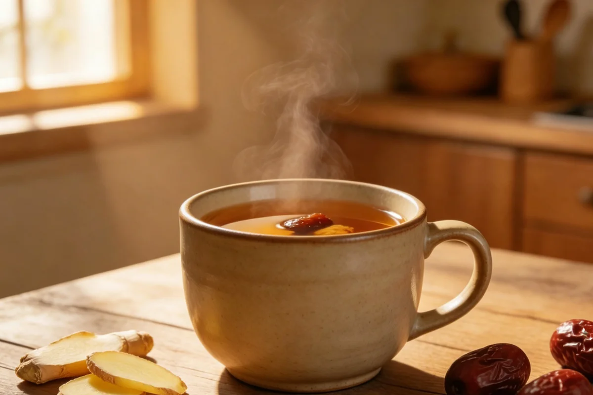

Archive index
Household Notes by Category
Six groups organize the archive by room, object, and repeated household action.
Warm Foot Soaks
Evening basins varied by season and region. These records follow mugwort, ginger, peppercorn, water, stools, towels, and the work done after the basin was emptied.

-
Dried Mugwort and the Evening Foot Basin
The herb seller tied dried mugwort with red cotton thread before placing it in my market bag. She pressed the bundle flat so the brittle leaves would not scatter among the vegetables.
-
Sichuan Peppercorn in the Winter Foot Basin
The spice seller recognized the peppercorns I did not want for cooking. She pushed the duller husks into a separate paper twist and told me they still belonged in a winter household.
-
Ginger in the Winter Foot Basin
The woman next door carried her own enamel basin into the corridor on cold evenings. I knew ginger was inside before I saw the slices because the steam brought the kitchen smell through the open doorway.
Kitchen Comforts
Kitchen records include grains, roots, dried fruit, summer pots, sweet soups, tea jars, and the utensils used to prepare them.

-
Ginger and Red Dates After Dinner
After dinner my grandmother cleared the bowls, cut ginger on the board that still smelled of scallion, and dropped red dates into a small enamel pot. The first cup went to the family member still sitting at the table.
-
Plain Rice Congee and the Everyday Pot
At the grain stall, I asked why two sacks of white rice carried different prices. The seller rubbed a few grains between her fingers, then told me which one her family used for the breakfast pot.
-
Yam and Millet in the Northern Porridge Pot
A northern grain seller split a piece of dried yam to show me its chalky center, then swept yellow millet into a paper bag. At home, the two colors stayed distinct until the breakfast pot began to thicken.
-
Scallion White in the Early-Cold Kitchen
When a wet coat came through the kitchen door, my grandmother set aside the white ends of the scallions she was cutting for dinner. She rinsed the roots, put on a small pot, and moved the dry shoes nearer the chair.
-
The First Cup of Warm Water
Before the office lights were fully on, the night guard filled his enamel mug from the communal kettle. I stood beside him with my own cup while the first buses moved past the gate.
-
Snow Pear Water in the Night Kitchen
When I was seven, my grandmother heard me coughing from the back room and went to the kitchen without turning on the ceiling light. The pear, the small pot, and the bowl she carried upstairs are the part I remember.
-
Tremella Soup and the Long Simmer
The dried-goods seller turns a tremella cluster over in her palm and points to its tight folds. I carry the brittle flower home in a paper box; by the time it reaches the pot, it occupies far more room.
-
The Summer Pot of Mung Bean Soup
At the neighborhood grain shop, the clerk keeps mung beans in a deep bin near the door. I watch her reject the split, dusty ones before she folds the green beans into a square paper parcel.
-
Longan and Red Date Tea in the Women's Room
At a women's gathering, I watched the host remove date stones before the cups reached the older guests. The longan shells had already been cleared into a small bowl beside the kettle.
-
Sour Plum Drink in the Beijing Summer
In my grandmother's Beijing courtyard, the sour-plum jar lived on the refrigerator door through July. She checked it before breakfast, and my grandfather drank from it standing beside the open door after bicycle work in the lane.
-
Lotus Root Water: The Pale Summer Sip
Lotus root came home from the market with mud in its joints. My grandmother cleaned the holes with a chopstick, cut the best rounds for dinner, and put the small end pieces into a side pot of water.
-
Corn Silk Water at the Edge of the Summer Stove
My grandmother saved the clean silk from fresh corn, rinsed it in a white bowl, and kept a small covered pot beside the lunch stove.
-
Honey and White Radish in a Lidded Jar
A wet-market seller chose a firm white radish, trimmed its leaves, and wrapped it in newspaper. At home, I set the cut pieces beneath honey in a lidded jar.
-
Hawthorn Water at the Dried-Fruit Counter
The woman who ran the dried-fruit counter stored hawthorn slices in a wide glass jar. She held one ring toward the window, shook the loose seeds from the scoop, and folded the paper bag twice before handing it over.
-
Black Sesame Walnut Paste: The Dark Sweet Bowl
At a dried-goods counter, I can hear the sesame before I smell it: seeds running through a metal scoop, walnuts knocking against the scale, and the vendor folding both into paper for the same kitchen bowl.
-
Water Chestnut and Sugarcane in the Summer Pot
A neighbor arrived with a dented pot and a length of sugarcane wrapped in newspaper. I cleared the kitchen table while she tipped water chestnuts into the sink and asked for the heavier knife.
Everyday Rituals
These entries follow washing, grooming, reused kitchen water, soap pods, cups, combs, and other actions without a separate room of their own.

-
Rice Water Between Kitchen and Washroom
The downstairs neighbor never poured the first cloudy rice water straight into the drain. I watched her carry the enamel bowl from the kitchen to the courtyard, where several household jobs were waiting for it.
-
The Salt-Water Glass Beside the Toothbrush
At my aunt's washbasin, a small glass stood apart from the drinking cups. I knew it by the cloudy salt mark near the base and by the way she rinsed it before putting the toothbrushes back.
-
Fresh Ginger at the Dressing Table
My grandmother kept a small knob of ginger beside the soap dish. After washing her hair, she cut a fresh face on it at the bathroom sink and leaned toward the mirror while I stood behind her.
-
Soap Pods at the Wash Basin
The market vendor cracked a dried soap pod with a short wooden mallet and opened the dark shell toward me. I could see the sticky interior before I understood why these pods once hung beside wash basins.
Cloth Warmth
Cloth warmth records include salt bags, warmed towels, moxa sticks, ash bowls, reused cotton, and the care required around heat and embers.

-
The Coarse Salt Warming Bag
My grandmother made her salt bag from a worn cotton pillowcase. On winter evenings she warmed the coarse crystals in the kitchen, tested the bundle against her wrist, and carried it to the chair beside the television.
-
Moxa Smoke in the Winter Room
The herb-shop clerk would not hand over a moxa roll without showing me the ash bowl. She set a ceramic dish on the counter, opened the window behind her, and cleared the paper packets away from the demonstration space.
-
The Warm Towel Folded Over the Eyes
At the end of a long sewing afternoon, my aunt folded a warm towel into a narrow rectangle and laid it over her closed eyes. I sat across from her while the machine wheel slowed to a stop.
-
Ginger Beneath the Folded Belly Cloth
An older neighbor grated fresh ginger into a thin cotton square, folded the cloth inward, and tucked it beneath a loose nightshirt before bed.
-
Potato Slices and the Folded Handkerchief
The older neighbor at the card table pushed her chair back, went to the kitchen, and returned with a paring knife, a shallow plate, and one peeled potato. She cut a broad slice, laid it across a forehead, and folded a cotton handkerchief over it.
Sleep & Calm
Bedroom and rest records cover seed pillows, aired quilts, midday chairs, evening walks, bedside cups, and changes made when the season turned.

-
Sour Jujube Seeds at the Bedside
The herb-shop assistant crushed a sour-jujube seed beneath a small brass weight, then folded the fragments into paper. I heard the dry shell break above the quieter traffic outside.
-
Goji Berries in the Glass Tea Jar
At the dried-fruit counter, the shopkeeper pinched a goji berry open to show me the seeds. I carried the red parcel home beside a glass tea jar, careful not to crush it under the heavier groceries.
-
The Evening Walk After the Meal
The post-meal walk begins when bowls are cleared and chairs move back. It is usually slow, social, and close to home: a courtyard circuit, a lane to the corner, or a loop through an apartment compound.
-
Bedding Across the Courtyard Rail
Bedding airing belongs to the clear-weather calendar of the household. Quilts move from beds to rails, cotton is turned and tapped, and the room remains open until the fabric is carried back inside.
-
The Midday Rest After Lunch
The tailor next door lowered his bamboo blind after lunch but never locked the shop. I could still hear the radio behind it while he rested on a narrow bench between the cutting table and the fabric shelves.
-
Cassia Seed Pillow: An Old Summer Bedroom Object
At the herb stall, the vendor poured cassia seeds into a shallow metal dish and shook it near my ear. The dry rustle explained why this old pillow never behaved like cotton.
Seasonal Comfort
Seasonal entries follow objects and ingredients that moved into use for summer heat, autumn dryness, winter rooms, and humid weather.

-
The Bamboo Wife in the Summer Bed
The bamboo wife was a hollow woven bolster placed on a summer bed. Its literary names are unusually elaborate, but the object itself was built for arms, knees, moving air, and a room arranged around humid weather.
-
Fresh Mint Cloth by the Summer Door
My grandmother kept mint in a cracked clay pot on the kitchen sill. On the hottest afternoons she rubbed the leaves between her palms, lowered a cotton cloth into an enamel basin, and left it by the shaded back door.
-
Winter Melon Tea on the Autumn Counter
The preserved-fruit seller cut a dark slab of winter-melon sugar with a broad knife and wrapped it in waxed paper. I carried the sticky parcel home separately from the tea and grain.
-
Chrysanthemum Flowers in the Autumn Teacup
The tea seller opened a glass jar and lifted one dried chrysanthemum by its stem. I watched the pale petals loosen over the counter before they ever reached a cup.